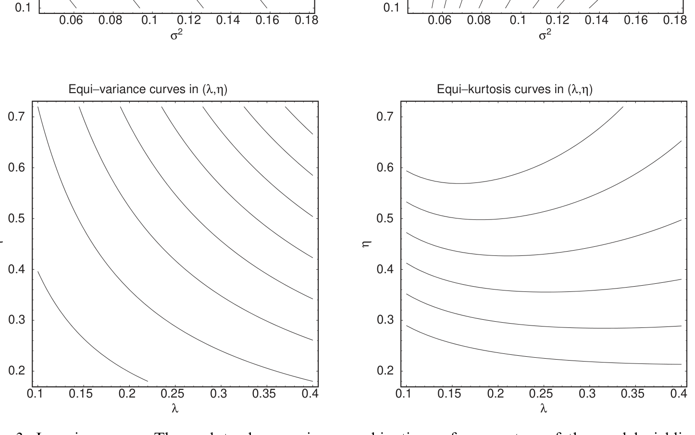
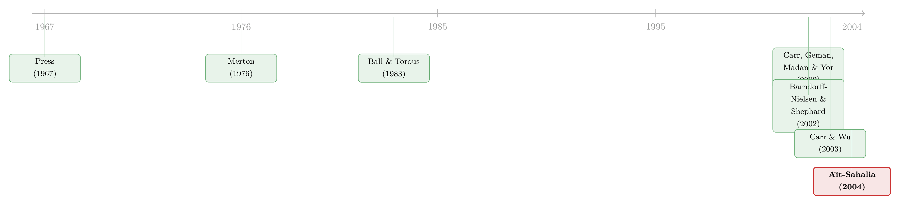

明明长得一模一样，为什么高频数据能一眼认出「跳跃」？
本文读的是 Aı̈t-Sahalia (2004, Journal of Financial Economics)：资产价格里既有连续的布朗波动、又有不连续的跳跃，二者乍看难分难解；但作者证明，只要采样足够频繁，极大似然 (maximum likelihood, MLE) 能把扩散参数 \(\sigma^2\) 估得「就像跳跃根本不存在」一样精确——而且这个近乎不可思议的结论，连无穷活动的 柯西跳跃 (Cauchy jumps) 也照样成立。
1 引言：一个「本不该成立」的结果
先讲一个让人犯难的处境。
你手里有一串资产的对数收益序列，你相信价格的演化里同时藏着两种「噪声」：一种是连续的、像水面涟漪一样无时无刻不在抖动的 布朗运动 (Brownian motion)；另一种是偶尔来一下、却来得又凶又猛的 跳跃 (jump)。在期权对冲里，这两种风险的对冲方式完全不同；在组合配置里，能把总风险拆成「布朗的那一份」和「跳跃的那一份」，资产需求才能进一步优化；而在风险管理里——作者说得很直接——把跳跃从波动里剥出来，几乎就是风险管理的全部要义：你要管的是那些大风险，而不是日复一日的布朗式微小起伏。
于是一个朴素的问题浮上来：跳跃的存在，会不会把我对扩散参数 \(\sigma^2\) 的估计搅浑？
凭直觉，答案似乎是肯定的，甚至是显然的。一次跳跃看上去就是一次「大的波动」，一次大的布朗实现看上去也是一次「大的波动」——它们在一段离散数据里长得几乎一模一样，你凭什么把它们分开？更要命的是，在所有 莱维纯跳过程 (Lévy pure jump processes) 里，只有 复合泊松过程 (compound Poisson process) 在有限时间内跳跃次数有限；其余的过程（比如柯西）在任意有限区间里都有无穷多次极小的跳跃。这些细碎的小跳跃，本身就和「由无数微小移动累加而成的布朗运动」像极了。要把它们分开，听起来像是天方夜谭。
可作者偏偏说：能分开，而且能分得干干净净。 这就是全文的张力所在——所有直觉都在说「不行」，而似然函数却说「行」。本文要做的，就是把读者一步步带到这个反转面前，再看清它为什么成立。
2 模型：把噪声拆成两半
故事从最经典的设定开始，也就是 Merton (1976) 的 跳跃-扩散模型 (jump-diffusion model)。设 \(X_t\) 是某资产的对数收益，它满足
$$dX_t = \mu\, dt + \sigma\, dW_t + J_t\, dN_t$$
其中 \(W_t\) 是标准布朗运动，\(N_t\) 是到达率为 \(\lambda\) 的泊松过程，跳跃幅度 \(J_t \sim N(b,\eta)\)。参数向量是 \(\theta = (\mu,\sigma^2,\lambda,b,\eta)'\)。作者关心的核心，是把扩散部分的信息 \(\sigma^2\) 从跳跃部分的信息 \((\lambda,\eta)\) 里区分出来；至于两个均值 \((\mu,b)\)，对统计推断而言基本无关紧要。
把这个随机微分方程积分，区间 \(\Delta\) 上的增量是
$$Z_\Delta = X_\Delta - X_0 = \mu\Delta + \sigma W_\Delta + \int_0^\Delta J_s\, dN_s$$
由于参数都与状态无关，这些增量是独立同分布的。剩下的关键，是写出它的转移密度。先注意泊松过程给出「这段区间里恰好跳了 \(n\) 次」的概率：
$$\Pr(N_\Delta = n;\theta) = \frac{e^{-\lambda\Delta}(\lambda\Delta)^n}{n!}$$
再对跳跃次数做条件、用全概率公式一加总，就得到整个模型的转移密度——这是全文真正的「主方程」，值得一字一句看清楚：
这是一个以泊松概率为权重的正态混合 (mixture of normals)。它已经悄悄埋下了后文反转的种子，但我们先按住不表。先看它的矩——Press (1967) 早就算过前四阶，其中方差是
$$M(\Delta,\theta,2) = \Delta\big(\sigma^2 + (b^2+\eta)\lambda\big)$$
请记住这一式：观测到的收益方差，是「扩散方差 \(\sigma^2\)」和「跳跃方差 \((b^2+\eta)\lambda\)」加在一起的。换句话说，光看方差，你根本分不清这个数里有多少来自 \(\sigma^2\)、多少来自跳跃。这正是第 3 节所有「劝退式直觉」的根源。
3 三个「劝退」的直觉
作者很坦诚，他没有一上来就抛结论，而是先花了整整一节，把「为什么你会觉得这件事做不到」讲透。这是本文叙事上最漂亮的地方：先把读者的怀疑喂饱，再来反转。
3.1 等噪声曲线：方差和峰度都「认不出」它
第一个直觉来自传统的矩方法。非线性最小二乘里，估计量的精度正比于「矩函数对参数的偏导」：参数微微一动、矩函数大变，参数就估得准；反之，参数大动而矩函数纹丝不动，参数就估不准。
作者画出了所谓的 等噪声曲线 (isonoise curves)——那些给出相同可观测方差（或峰度）的参数组合。同一条曲线上的任意两组参数，从矩方法看过去是完全无法区分的。

Figure 3: Isonoise curves. These plots show various combinations of parameters of the model yielding
如图 3 所示，无论是在 \((\sigma^2,\lambda)\) 平面还是在 \((\lambda,\eta)\) 平面，等方差线和等峰度线都是一条条平缓的曲线（图中取 \(\Delta=1/12\)，\(\mu=b=0\)，上行 \(\eta^{1/2}=0.6\)、下行 \(\sigma=0.3\)）。落在同一条线上的参数，制造出的「波动感」一模一样。这正说明：仅靠方差和峰度，你没法把扩散和跳跃掰开。 它也顺带提示，要做 GMM，光用方差和峰度远远不够——这个伏笔到第 6 节才揭开。
3.2 大涨大跌，到底是跳跃还是运气？
第二个直觉更贴近交易员的本能：既然跳跃来得「凶」，那是不是看到一次大涨大跌，就能判定「这是一次跳跃」？
作者用贝叶斯公式算了这件事：给定观测到一个幅度 \(\geq z\) 的收益，它「确实含有一次跳跃」的后验概率有多大？结果相当反直觉——即便那根收益已经远到距离均值约 3.5 个标准差，它由「纯布朗噪声」生成的可能性，仍然高于由「一次跳跃」生成的可能性。而 3.5 个标准差本身就极其罕见，任何有限长度的序列里也见不到几根。靠「大收益」来识别跳跃，是一条几乎走不通的路。
但这里藏着一个关键的「但是」：采样越密，识别能力越强。 作者把 \(\Pr(N_\Delta=1\mid |Z_\Delta|\geq z)\)（取 \(z=10\%\)）画成采样间隔 \(\Delta\) 的函数：\(\Delta\) 越小，一根 10% 的大收益由跳跃造成的概率就越高。然而这个能力衰减得极快——从「一分钟」走到「一小时」再走到「一天」，识别力就迅速塌掉了。因为时间一长，那 10% 完全可能是区间 \((0,\Delta)\) 内无数次布朗微小移动的累加。
请把这个「采样越密越好」记牢——它是第 4 节反转的唯一出口。
3.3 时间一拉长，跳跃就被「抹平」了
第三个直觉，是 时间聚合 (time aggregation) 带来的「时间平滑」。就像移动平均会把原序列磨得更光滑，时间跨度越长的对数收益，也比短跨度的更平滑——而跳跃，恰恰在这个平滑里被平均掉了。
作者举了一个极端但真实的例子：1987 年股灾对道琼斯工业指数的冲击。如果你只看年度数据，1987 年那场崩盘根本不存在——它被一整年的涨跌稀释得无影无踪；可一旦把频率提高，崩盘就越来越清晰。这个例子把「时间平滑会吃掉跳跃」讲得淋漓尽致。
三个直觉，三记重拳，全都指向同一个结论：分不开。可正是在这里，反转出现了。
4 反转：似然函数看穿了一切
前面三个直觉其实都偷偷站在「低频」或「矩方法」这一边。而第 3.2 节那句「采样越密越好」，已经把出路指了出来：最好的分离机会，藏在高频数据里。
作者把所有估计量都放进 广义矩估计 (generalized method of moments, GMM) 的框架，再令矩条件 \(h\) 取似然的得分向量 (score)，这一类估计量就涵盖了极大似然。记对数似然为 \(l(y,\Delta,\theta)\)，由信息矩阵恒等式，
$$\Sigma = E[\dot{l}\,\dot{l}^{\,\prime}], \quad D = -E[\ddot{l}], \quad \Sigma = D$$
于是 MLE 的渐近方差就由 Fisher 信息给出。接下来是全文的定理：作者证明，当 \(\Delta \to 0\)（采样无限频繁）时，\(\sigma^2\) 的 Fisher 信息，等于「根本没有跳跃、唯一噪声来源是布朗运动」时的 Fisher 信息——跳跃带来的所有干扰项，都是 \(\Delta\) 的更高阶小量，在极限里干净地消失了。换句话说，\(\sigma^2\) 的渐近方差，回到了纯扩散下那个经典的高斯基准 \(2\sigma^4\)，就像跳跃从未出现过。
为什么会这样？回头看第 2 节那个混合密度就懂了。当 \(\Delta\to 0\)，\(e^{-\lambda\Delta}\approx 1\)、\(\lambda\Delta\) 极小：\(n=0\) 项（没跳跃）的权重 \(\approx 1-\lambda\Delta\)，几乎占满全部质量，而它是一个纯高斯密度 \(N(x_0+\mu\Delta,\ \sigma^2\Delta)\)，由 \(\sigma^2\) 独家掌管；\(n\geq 1\) 项（有跳跃）的权重只有 \(O(\lambda\Delta)\)，被挤进了密度的尾部。于是似然函数看到的图景是：绝大多数区间是纯布朗的、贡献着关于 \(\sigma^2\) 的精确信息；极少数含跳跃的区间躲在尾巴里，反而成了关于 \(\lambda,\eta\) 的信息。 布朗增量是 \(O(\sqrt{\Delta})\)、跳跃是 \(O(1)\)，二者的尺度在高频下被彻底拉开——分不开，只是低频和矩方法的错觉。
这就是本文最核心、也最该被反复咀嚼的一句话：所谓「跳跃和波动难分」，是一个被采样频率掩盖的假象；把频率推到极限，似然函数就能把它们完美地解开。
5 不只是泊松：连柯西跳跃也躲不掉
到这里，一个自然的问题是：这会不会只是泊松跳跃的特权？毕竟复合泊松过程是唯一「有限次跳跃」的莱维纯跳过程——它的跳跃「又大又稀」，本就和布朗噪声泾渭分明。换成那些在任意区间都有无穷多次小跳跃的过程呢？这些细碎小跳，按理说才是最像布朗运动、最难分辨的。
每一个莱维过程都能唯一地分解成三块独立的标准成分：一块连续的布朗分量（带漂移）、一块「大跳跃」分量（只含幅度大于 1 的跳的复合泊松）、以及一块「小跳跃」分量（只含幅度小于 1 的跳的纯跳鞅）。泊松那个例子，对应的是「区分布朗 vs 大跳跃」；而作者在第 6 节专门研究的 柯西过程 (Cauchy process)，正是「小跳跃」那一类——无穷活动 (infinite activity)——的原型。
结论令人意外：即便面对柯西过程，极大似然依然能完美区分布朗噪声与跳跃。 这一步把全文的贡献从「泊松的巧合」一举抬升到「莱维过程的普遍性质」，也为金融里越来越流行的非泊松跳跃模型（比如方差伽马、CGMY）提供了第一块统计支撑：你大可以把这些跳跃过程和布朗波动混在一起用，照样能把二者认出来。
（关于「跳跃」在另一端的指纹——短期期权价格——如何被读出来，可参见《期权"快到期"那一刻，藏着跳跃的指纹》。）
6 GMM 的「次优」尝试：绝对矩能追上 MLE 吗？
既然 MLE 这么神，一个务实的问题是：那些不需要写出完整似然、只靠几个矩的 GMM 估计量，能不能也追上这份效率？
作者考察了非整数阶的绝对矩。这里要用到 Lepingle (1976) 关于 幂变差 (power variation) 的一个漂亮结果：当阶数 \(r\in(0,2)\) 时，跳跃部分对 \([X,X]_r\) 的贡献（归一化后）是零；当 \(r=2\) 时是 \(\sum J_{s_i}^2\)；当 \(r>2\) 时是无穷大。Barndorff-Nielsen 和 Shephard (2002) 正是用这一点说明：取 \(r\in(0,2)\) 的幂变差只依赖于扩散分量——这给「绕开跳跃、单测 \(\sigma^2\)」提供了天然的工具。
作者把这些绝对矩组进 GMM。答案是：不能完全复刻 MLE 的效率——这并不意外，毕竟 MLE 是渐近有效的金标准；但用绝对矩，确实比只用传统的方差和峰度要好得多。这一节既诚实地承认了 MLE 的不可替代，又给实务里更省事的矩方法指了一条改进的明路；最后第 7 节的蒙特卡洛进一步表明，这些渐近结论在日频数据里就已经是相当好的近似，并非只在 \(\Delta\to 0\) 的理想极限里才成立。
文献脉络
把这篇论文放回它所在的那条线上，脉络其实很清晰。
最早把跳跃请进金融的，是 Press (1967) 的「复合事件模型」和奠基性的 Merton (1976)——后者用泊松跳跃刻画股票收益的不连续性，几乎是所有跳跃-扩散研究的起点；Beckers (1981)、Ball 和 Torous (1983) 随后讨论了这类模型的参数估计。这是「大而稀」的泊松时代。
接着，文献迅速转向更一般的莱维纯跳过程：Carr、Geman、Madan 和 Yor (2002) 在「资产收益的精细结构」里甚至发现，对许多资产，一旦纳入非泊松跳跃，扩散系数在统计上就不再显著——这逼出了一个尖锐的问题：刻画资产收益，到底还需不需要一个布朗分量？与此同时，Barndorff-Nielsen 和 Shephard (2002) 用幂变差研究了跳跃存在时二次变差等统计量的行为；Carr 和 Wu (2003) 则从短期期权出发去检验「底层到底是什么过程」。
然后，本文 Aı̈t-Sahalia (2004) 切入了一个被忽略却基本的角度：跳跃究竟如何影响我们估计 \(\sigma^2\) 的能力？它把答案钉死在「采样频率」上，并一路推广到柯西过程。沿着这条「连续时间估计」的方法论主线，作者本人随后的工作（Aı̈t-Sahalia, Mykland, Zhang, 2003）把视线转向了真实高频数据里的市场微观结构噪声——既然「采样越密越好」，那密到被噪声污染时又该怎么办？（这条线，可参见《一秒一笔的数据，为什么只敢拿 5 分钟用一次？》。）

评论与延伸（Q&A + 研究方向）
(a) 几个可能的疑问
Q：「完美区分」是不是夸张了？它到底在什么意义上成立？
它是一个渐近结论：当采样间隔 \(\Delta\to 0\) 时，\(\sigma^2\) 的极大似然估计达到的渐近方差，与「根本没有跳跃」时相同，跳跃的干扰是 \(\Delta\) 的更高阶小量。不是说任意有限样本下都能零误差，而是说采样足够密时，跳跃对 \(\sigma^2\) 几乎不再造成效率损失。第 7 节的蒙特卡洛显示，日频已是不错的近似。
Q：为什么矩方法（方差、峰度）就分不开，似然却能分开？
因为观测方差是 \(\sigma^2\) 和跳跃方差 \((b^2+\eta)\lambda\) 的简单加总，等噪声曲线（图 3）告诉你无穷多组参数给出同一个方差。而似然用的是整条密度的形状：高频下密度的「主体」是由 \(\sigma^2\) 掌管的高斯，跳跃只改写尾部——形状信息远比两三个矩丰富。
Q：高频「越密越好」，但现实里数据密到一定程度就全是微观结构噪声，这结论还管用吗？
这正是本文留下的张力，也是作者后续研究（Aı̈t-Sahalia, Mykland, Zhang, 2003）专门处理的问题。本文的理想极限假设观测是干净的；一旦买卖价差、离散报价等噪声进场，盲目提高频率反而有害，存在一个最优采样频率。本文的结论应理解为「在无噪声理想下的可识别性上界」。
Q：柯西那个例子有多重要，还是只是炫技？
很重要。柯西是无穷活动纯跳过程的原型，代表了「小跳跃」那一类——它们最像布朗运动，本应最难分辨。能在柯西上做到完美区分，等于说本文的结论不是泊松的巧合，而是相当一般的性质，这为方差伽马、CGMY 等非泊松模型的使用提供了统计正当性。
Q：这对风险管理到底意味着什么？
作者的立场是：风险管理的要义就是把「该担心的大风险（跳跃/尾部）」和「日常的布朗起伏」分开管。本文说，只要数据频率够高，这种分离在统计上是可行的——可以用高斯工具管短期布朗风险，用识别出的跳跃分量去评估 VaR 等尾部统计量。
Q：均值参数 \(\mu\)、\(b\) 为什么被晾在一边？
在本文的推断语境里它们「基本无关紧要」：方差/识别的核心矛盾发生在 \(\sigma^2\) 与 \((\lambda,\eta)\) 之间。当然，对要在资产上做方向性押注的投资者，\(\mu\)、\(b\) 极其重要——只是不在这篇文章的问题之内。
(b) 几个可能的研究问题与提案
1）把「扩散 vs 跳跃」的可识别性搬到公司债市场。 【经济故事】公司债的价格跳跃常和评级迁移、违约新闻、流动性骤停绑在一起，把信用利差变动拆成「连续扩散」与「跳跃」两块，对信用风险定价和尾部管理意义重大。【可行性】中。TRACE 的逐笔成交可构造较高频的价格序列，但公司债交易稀疏、非同步，远达不到股票/外汇的频率，本文「越密越好」的前提会被严重削弱；需要先处理交易稀疏与微观结构噪声，识别力会打折。
2）外资持有人冲击是「跳跃」还是「扩散」？ 【经济故事】外资大额进出常被认为是市场骤变的来源。若能在持有人层面把外资引发的价格变动识别为跳跃分量，就能直接检验「外资是不是波动放大器」。【可行性】中偏低。需要把高频价格的跳跃识别与持有人层面的流向数据对齐，而后者通常只到季度/月度，频率错配是硬约束；可在有逐日外资流向的市场（如韩国、台湾）尝试。
3）流动性枯竭时，跳跃识别力会怎样退化？ 【经济故事】本文的「采样越密越好」在危机中可能反转——成交骤停、价格阶梯化，高频反而全是噪声。把识别力随流动性恶化的衰减刻画出来，本身就是一个流动性度量。【可行性】高。用 2020 年 3 月这类公司债流动性危机窗口（可对照《差点死掉的那个市场：一场公司债流动性危机的微观解剖》），比较危机前后跳跃-扩散分离的稳定性，数据与方法都现成。
4）非整数阶绝对矩 GMM 的「最优阶数」选择。 【经济故事】本文证明绝对矩 GMM 优于方差/峰度却追不上 MLE，那么在给定数据频率与噪声水平下，存在一个使效率损失最小的阶数 \(r\) 吗？【可行性】高。纯计量/蒙特卡洛问题，沿用本文的矩公式即可，doable，且对实务里「不想写完整似然」的人很有用。
我的判断
这篇论文的贡献在我看来有两层。第一层是反直觉的洞见本身：它把「跳跃与波动难分」这个几乎被当作公理的信念，揭穿为低频与矩方法的产物，并用似然把分离的可行性钉死在采样频率上——叙事上先用三个直觉把读者的怀疑喂满，再一举反转，干净利落。第二层是它的普遍性：从泊松推广到柯西，意味着结论不是个例，而是莱维过程的一般性质，这对整条非泊松跳跃文献都是底层支撑。
对识别的担忧也很清楚，而且作者自己心里有数：整篇的力量都押在「无噪声、可无限加密」这个理想极限上。一旦市场微观结构噪声进场，「越密越好」会反转为「过密反而有害」，存在最优频率——这恰是作者后续工作的主题，本文的结论应被读作「干净数据下的可识别性上界」，而非任何频率都能照搬的实务处方。蒙特卡洛虽显示日频已是良好近似，但那是在模型设定正确、参数温和的前提下做的；模型设定本身一旦有误（比如真实跳跃既非泊松也非柯西、波动率随机时变），这份「完美」还能剩多少，是开放的。
我接下来最想看到的，是把这套可识别性的思路，认真地搬到交易稀疏、噪声更重的市场（公司债、新兴市场、外资主导的标的）里去——在那里，「能不能把跳跃从波动里分出来」不再是渐近的奢侈品，而是一个会被流动性反复掐断的、真正稀缺的能力。
参考文献
- Aı̈t-Sahalia, Y. (2004). Disentangling diffusion from jumps. Journal of Financial Economics 74(3), 487–528.
- Aı̈t-Sahalia, Y. (2002a). Maximum-likelihood estimation of discretely-sampled diffusions: a closed-form approximation approach. Econometrica 70(1), 223–262.
- Aı̈t-Sahalia, Y. (2002b). Telling from discrete data whether the underlying continuous-time model is a diffusion. Journal of Finance 57(5), 2075–2112.
- Aı̈t-Sahalia, Y., Mykland, P.A., Zhang, L. (2003). How often to sample a continuous-time process in the presence of market microstructure noise. Review of Financial Studies, forthcoming.
- Ball, C.A., Torous, W.N. (1983). A simplified jump process for common stock returns. Journal of Financial and Quantitative Analysis 18(1), 53–65.
- Barndorff-Nielsen, O.E., Shephard, N. (2002). Power variation with stochastic volatility and jumps. Working paper, University of Aarhus.
- Beckers, S. (1981). A note on estimating the parameters of the diffusion-jump model of stock returns. Journal of Financial and Quantitative Analysis 16(1), 127–140.
- Carr, P., Geman, H., Madan, D.B., Yor, M. (2002). The fine structure of asset returns: an empirical investigation. Journal of Business 75(2), 305–332.
- Carr, P., Wu, L. (2003). What type of process underlies options? A simple robust test. Journal of Finance 58(6), 2581–2610.
- Hansen, L.P. (1982). Large sample properties of generalized method of moments estimators. Econometrica 50(4), 1029–1054.
- Lepingle, D. (1976). La variation d'ordre p des semi-martingales. Zeitschrift für Wahrscheinlichkeitstheorie und Verwandte Gebiete 36, 295–316.
- Merton, R.C. (1976). Option pricing when underlying stock returns are discontinuous. Journal of Financial Economics 3(1–2), 125–144.
- Press, S.J. (1967). A compound events model for security prices. Journal of Business 40(3), 317–335.